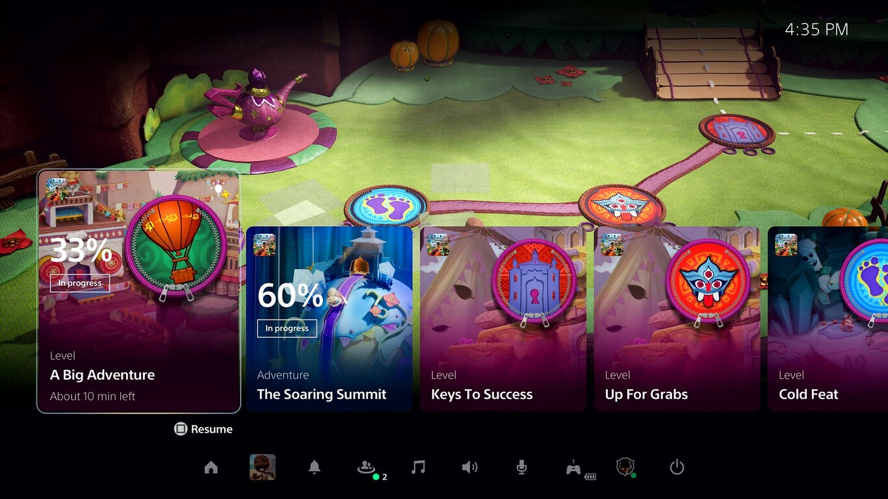

Xbox Series X y Playstation 5 muestran sus nuevas interfaces: así van a van a dar la cara las consolas de Sony y Microsoft

Las interfaces o UIs son un aspecto de las consolas que a menudo pasa desapercibido o se entiende como un ingrediente menor y utilitario del diseño. Nada más lejos de la realidad: es la conexión directa entre el usuario y las tripas de la consola. Una mala interfaz puede condenar la interacción entre los jugadores y su herramienta de juego, y estropear la experiencia global.
Hoy, Sony y Microsoft han presentado nuevas interfaces de usuario (UIs) En ambos casos llegan a tiempo para formar parte de sus nuevas consolas, Xbox Series X y S y las dos versiones de Playstation 5, pero también se incorporarán a sus anteriores encarnaciones. En ambos casos conservan elementos de sus versiones previas, pero han evolucionado para incluir aspectos que van cobrando nueva importancia en nuestra forma de jugar, como bibliotecas cada vez más nutridas dentro del disco duro de la consola y más sofisticación en la posibilidad de compartir contenido.
Playstation 5: nuevas formas de jugar
Lo primero que vemos de la nueva interfaz de la máquina de Sony es que ya no hay una serie de filas con categorías de distintas secciones de la consola, como la biblioteca de juegos, los últimos títulos que se han jugado, configuración, apps y demás, sino que hay un acento mayor en los juegos (aunque todas esas secciones siguen siendo, obviamente, accesibles de forma sencilla). El vídeo hace hincapié en el Centro de Control, al que se accede con una sencilla pulsación desde el mando, y que está poblado con elementos que ocupan buena parte de la pantalla, llamados Cards.
Una de las novedades de la interfaz, que podría decirse que afecta al propio concepto de la consola, son las llamadas Activities, que conectan con elementos clave de cada juego. Estas Activities están agrupadas en el Centro de Control, y detallan elementos de interés en el desarrollo del juego, desde porcentaje del nivel completado (y tiempo estimado para completar una tarea, por ejemplo) a misiones y desafíos que se pueden abordar.
En muchos juegos estas tarjetas podrán superponerse sobre la propia partida para no perderlas de vista. A través de estas tarjetas también se podrá acceder a ayuda oficial del juego, elaborada por los propios creadores y exclusiva para miembros de Playstation Plus (se entiende que solo con determinados juegos), y que podrá tomar forma, por ejemplo, de vídeos explicando la solución de los enigmas más peliagudos de las distintas aventuras.
También destaca la facilidad con la que se podrá acceder al chat con amigos, inmediato y sin complicaciones gracias al micrófono que posee el mando de la consola. También en torno a la interacción con amigos gira la posibilidad de en todo momento ver qué actividades están haciendo los amigos de un grupo dado o incluso de asistir como espectador a una partida ajena mientras nosotros no dejamos de jugar a la propia.
Finalmente, el vídeo se centra en la propia home de la interfaz, lo que vemos cuando salimos de un juego o encendemos la consola. Optimizado para las pantallas panorámicas y en alta definición que usamos actualmente, es una versión simplificada de lo que ya conocemos, mandando los juegos a primer plano y permitiendo que el usuario acceda con facilidad a todas las actividades y desafíos que ofrece cada título.
El apartado Explore es similar a la Biblioteca que teníamos en la anterior interfaz, pero sumándole un elemento de contenido especial y exclusivo sobre los juegos que interesan al usuario, aunque de momento poco más se sabe. Ni siquiera garantizan que esta opción vaya a estar disponible en su integridad en todos los territorios con el lanzamiento de la consola. Del mismo modo, también se avisa de que la Store ya no será una app independiente y la tienda estará integrada en el sistema, pero aún no hay imágenes.
Xbox Series X y S: Más velocidad y mejor rendimiento
Los cambios en la interfaz de Xbox son menos radicales que en el caso de Playstation, pero también aprovechan la nueva arquitectura de la consola y su renovada y mejorada velocidad para pasar más rápidamente de los juegos a las actividades que los rodean y todo lo que se puede hacer con la consola. Según el vídeo que la presenta, la nueva UI es un tercio más rápida que la versión anterior de la interfaz.
Home, Guide y Store, los tres puntos de la arquitectura de la consola que más se visitaban en Xbox One reciben un lavado de cara y son accesibles de forma más directa y sencilla que antes. Todos los apartados de la arquitectura de la consola reducen el impacto en el sistema para que la ejecución de los juegos sea más rápida y efectiva, y nos recuerda que una UI también tiene que servir para potenciar los contenidos, pero sin afectar a su rendimiento. Microsoft afirma que este impacto es un 40% inferior en la nueva UI.
Microsoft hace hincapié en la conectividad con el smartphone, algo que también se menciona de pasada en el vídeo de Playstation. Aquí, se habla de que un vídeo de gameplay recién capturado pasará a estar inmediatamente disponible en el móvil para ser compartido, lo que demuestra que en Microsoft han estudiado bien cómo y desde qué dispositivos se comparten vídeos y capturas, dejando atrás las incomodidades que supone lanzar contenidos desde la propia consola.